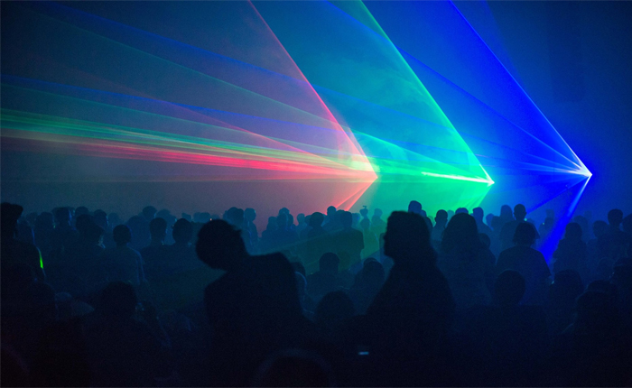
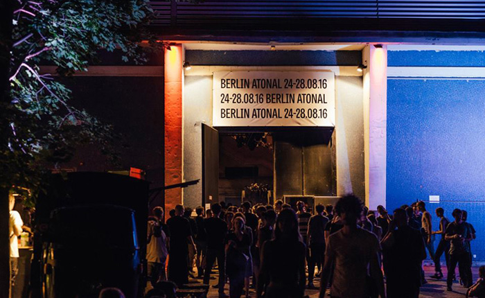

Why Berlin Atonal Will Convert You Into an Experimental Music Fanatic
{kind=link}

This year, Berlin’s iconic Tresor celebrates its 25th anniversary, and those who’ve descended into the club’s menacing industrial depths will be aware it’s a sight to behold—a labyrinth of concrete hallways leading into iron-door basement vaults. However, if you’ve queued to enter Tresor, then you might have pondered on the foreboding, windowless building that towers high above the club. It turns out it’s merely the basement corner of the larger Kraftwerk, a converted power plant that once a year hosts Berlin Atonal—the world’s definitive event for experimental music.
Encyclopaedia Britannica describes atonal music as that which is lacking in “functional harmony as a primary structural element”—ambient melodic journeys and harsh cybernetic noise. It’s the kind of sonic weirdness you might already be familiar with from producers like Aphex Twin, though the twisted soundscapes at Berlin Atonal often completely rid themselves of beats altogether. Attending this five-day event is about being blown away by abstract sounds you’ve never heard before, with your immersion levels assisted by a stunning fusion of audio, visuals and art, taking place in a post-industrial environment unlike anything you’ve ever seen.
Berlin Atonal actually holds a revered role in the formidable history of Berlin electronic music. Its founder, Dimitri Hegemann, ran the festival in West Berlin throughout the ‘80s, establishing it as an influential hub for experimental music. The fall of the Berlin Wall in 1989 saw a wealth of abandoned industrial spaces opening up in East Berlin, commandeered by the early techno scene, and Hegemann brought his festival to a close, adapting to the new DJ culture and opening the original Tresor. In 2013, Hegemann decided it was time for Atonal’s return.
Berlin Atonal 2015
“The Atonal Festival is a statement against the mainstream culture and marketing-driven curation,” Hegemann told Electronic Beats prior to his festival’s dramatic relaunch, which saw him passing the torch to a new generation of creative directors.
“It is a statement against typecast lineups and the formatted radio that we all know and that destroys our capability to listen. It is basically a statement against any kind of manipulation via the media. People love to listen to white noise, but you still can’t hear it.”
{kind=link}

Entering the Dark Void of Kraftwerk
The Kraftwerk power plant once provided electricity to the whole of East Berlin during the city’s communist era, and it holds a towering presence along the stretch of Kopernicker Straße next to the River Spree, taking up nearly half the street. Arriving early at 6pm, you’ll walk past the usual entrance to Tresor; it’s shut for the moment until the party moves downstairs after midnight. In the meantime, you’ll need to walk all the way to the far end of the Kraftwerk building, where you can enter a single darkened doorway. This is when things get serious.
The lower downstairs hall of Kraftwerk is one giant gothic-industrial art installation. Dusty halogen lights blink in sync with abstract soundscapes and water cascades over hauntingly mirrored surfaces, while eerie spotlights pierce the darkness, bouncing off scattered projector screens, which are themselves flashing with abstract imagery.
Early arrivals are treated to daily documentary screenings projected extravagantly across different surfaces in the downstairs musical stage, delving into some musical history, plus some select early musical performances of the most deeply weird, abstract nature.
On Saturday, contemporary composer Marcus Schmickler explored his darker creative corners, performing a live composition that fused with a reactive light show from Carsten Goertz, working together with a cast of on-site lighting professionals. Their powers combined to use the confined environment to summon a performance that was an art installation in itself. Crushingly dark and silent at moments, the lights flashed in sync with the robotic drone as it built to an unbearably shrill shriek of cybernetic noise, like a Skynet craft taking flight.
The main event begins at 8pm. The nondescript, winding staircase in the venue’s far-right corner takes you up two flights and opens into a spectacularly cavernous concrete space that stretches from one end of the building to the other. In total, the upstairs hall of Kraftwerk is about five times bigger than Berghain, Berlin’s other infamous converted-power plant nightclub.
It’s a room with some serious scale, a dazzling industrial coliseum. It’s the space where Berlin Atonal’s showcase concerts take place over five evenings, and its centerpiece is an elongated visual screen that towers high above the artist, stretching from floor to ceiling, and facilitating some of the most astonishing audiovisual performances you could ever hope to see.
Where Music and Art Meet to Become One
“We yearn for new sounds and uncharted territories,” Hegemann says. “I want Berlin Atonal to be an event where music, art, film, architecture and science merge.”
If Berlin Atonal represents a fusion of music and art, it has typically been the opening ceremony on Wednesday that has hosted the most pivotal moments since the festival relaunched, when the avant-garde experimentalism crosses over into something a little more conceptually ambitious.
The opening of the 2014 festival was the pinnacle. The Ensemble Modern was formed in Frankfurt in 1980 in dedication to performing and promoting the music of modern composers, and on Wednesday it joined with London’s Synergy Vocal ensemble to perform a live rendition of Steve Reich’s groundbreaking Music for 18 Musicians. Composed in the ‘70s and actually requiring many more than 18 musicians to recreate, the composition is a dazzling, hypnotic weave of melodies and harmonies, and its impact on the experimental spirit of the electronic music that followed is crystal clear.
That year also included the first-ever showcase in Berlin of the 4DSOUND System that has been engineered in Amsterdam, which expands the spatiality of sound in a mind-altering fashion. Instead of the music simply panning across the left and right speakers, imagine it moving in a circle around you, behind you and in front of you—and then passing right through you. Next-level sonic immersion.
Another coup for Atonal was an exclusive appearance from Konrad Becker, aka Monoton, who is actually credited with helping shape the “less is more” aesthetics of modern dancefloor techno with his 1982 album, Monotonprodukt 07. Taking a pause from his latter-life career as a music lecturer, theorist and curator, he recreated the album that has been credited with pioneering “minimalist” electronic soundscapes.
Visuals That Bring the Sound to Life
While there was nothing this year to match the conceptual triumph of those performances, the general programming of Berlin Atonal 2016 lives up to its cutting-edge reputation of showcasing sonic experimentalists who have been partnered with equally accomplished visual artists, the twisted soundscapes brought to life in a dazzlingly visceral fashion. The audiovisual live shows are so impactful they could communicate the essence of abstract electronica to your 90-year-old grandmother. Magnificent and mesmerising, alienating and unease-inducing—sometimes all of these things at once.
Atonal’s first stunning A/V moment came from Wednesday night’s closing act, Recent Arts, a partnership formed between Berghain regular Tobias Freund and Chilean visual artist Valentina Berthelon. They debuted their latest collaboration, which transposed a hypnotic real-time visual collage of flickering periodic tables and mathematical symbols over a seductive ambient soundtrack. Envision an epic, spine-tingling deep house breakdown from a late-night clubbing adventure, except with the limitation of beats and buildups removed altogether, so these musical spaces can be explored in infinitely more sonic detail.
The Extension of Expansion by Valentina Barthelon
Friday night also saw the big guns brought out to dazzle, inspire and confound, with a more intense evening that ventured into the spaces between techno maxims and industrial noise. Argentinian DJ/producer Jonas Kopp and multimedia artist Rainer Kohlberger combined powers for Telluric Lines, with layers of white static rippling across the giant screen, like an old cathode-ray television possessed by a poltergeist. Meanwhile, Atonal regular Samuel Kerridge reunited with OAKE for a seethingly intense finale as backlit smoke filled the coliseum, the visual screen muted and replaced with stark spotlights piercing down from the ceiling like daggers.
Saturday always represents the peak of the festival. Japanese producer ENA joins with Berlin-based Felix K for a special live show situated at the musical boundaries of abstract drum & bass. Imagine one long, extended drum & bass buildup, featuring visuals mesmerizingly matched with the slow, gradual build of the soundtrack. The tension is white-knuckle as its drum breaks are gradually introduced, with the percussive buildup percolating toward its explosive dancefloor drop for more than an hour—before it defiantly decides to eschew the payoff and drops back down into dreamy ambiance as it draws to a close.
The “headliner” was UK electronic veterans Death in Vegas, who debuted their new, long-in-the-works live performance that pairs them unexpectedly with Sasha Grey. If this sounds incongruous, she proves herself an accomplished performance artist who syncs effortlessly with the euphoric nature of the music, as her silhouette shimmers formidably above her on the video screen, immersed in dreamy blue visuals.
Imaginary Softwoods concluded Saturday’s concert performances, taking a sharp stylistic swerve into dreamy ambiance, with flickering visuals of suburban houses and quiet streets seemingly plucked right from your nostalgic childhood memories. The music is a sweet ambient lullaby to contrast the atonal harshness that preceded it, and it delivers the most surprisingly, disarmingly beautiful moment of the whole festival.
Conclusion
None of this even touches on the after-party mayhem that continues downstairs after midnight in Kraftwerk and Tresor. In some respects, Berlin Atonal failed this year to live up to the pinnacle it achieved at its 2015 event. The treasure trove of gothic art installations in lower Kraftwerk were replaced by gear cases lying around in a pile, and a few token flickering TVs and projections. However, its regular assembly of bleeding-edge A/V performances still proved more than enough.
The key to Berlin Atonal is an audience open to unconventional sounds, with the patience to listen and enjoy all the sinister, strange and wonderful music foisted upon them. There are hits and there are misses, but when the “abstract” is presented with this much splendor, it’s transformed into “accessible.”